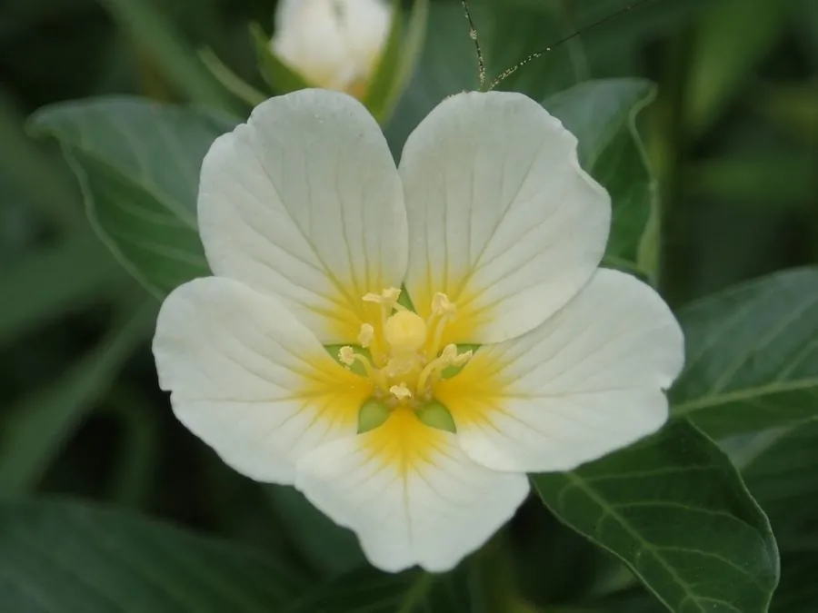

水生植物 · 植物界
水龙 Ludwigia adscendens

柳叶菜科丁香蓼属多年生水生草本，茎匍匐、浮水部分生白色呼吸根，花淡黄色，常见于南方池塘沟渠，可作绿肥。
- 分类
- 门被子植物门纲木兰纲目桃金娘目科柳叶菜科属丁香蓼属
- 栖息环境
- 热带、亚热带池塘、沟渠、水田和湿地
- 地理分布
- 亚洲、非洲及美洲热带亚热带，中国南方常见
- 保护级别
- 暂无评估
物种志
水龙为柳叶菜科丁香蓼属的多年生水生草本，茎匍匐或浮水，长可达 1–2 米，节上生不定根，浮水部分的节常生白色海绵状呼吸根。叶片互生，倒卵形或椭圆形，长 2–5 厘米，全缘。花单生于叶腋，淡黄色，花瓣 5 枚，花期夏季至秋季；果实为蒴果。
水龙分布于亚洲、非洲和美洲的热带、亚热带水域，中国南方池塘、沟渠、水田和湿地中常见，喜温暖、阳光充足和富含养分的水体。它茎匍匐、节上生根，浮水部分生白色呼吸根，能适应水位变化；全草可作绿肥和饲料，也可入药。栽培以茎段扦插繁殖为主，极易成活；在温暖水域生长迅速，需注意控制其蔓延。
形态与习性
- 株高茎长 1–2 米，匍匐或浮水
- 叶片倒卵形或椭圆形，长 2–5 厘米
- 花期夏季至秋季，花淡黄色
- 水深浅水至浮水生长
- 光照喜充足阳光
- 繁殖茎段扦插，极易成活
- 主要用途绿肥、饲料、药用
- 特点浮水节上生白色呼吸根
趣味知识
- 水龙浮水部分的节上会长出白色海绵状呼吸根。
- 它茎匍匐、节上生根，能随水位变化调整生长。
- 水龙全草可作绿肥和饲料，也可入药。